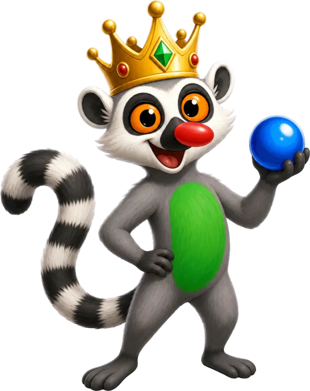

रास्ता-अनुसरण करने वाली श्रृंखला
रंगीन कंचों की एक श्रृंखला घुमावदार रास्ते पर चलती है और मैच के बाद खाली जगह भर देती है। मैच के लिए तीन या उससे ज़्यादा कंचे चाहिए।
लीमर राजा जंगल की रखवाली करता है।
चमकीले जंगल में सेट एक मार्बल शूटर। निशाना लगाएँ, तीन या उससे ज़्यादा मिलाएँ, चेन रिएक्शन शुरू करें और खास क्षमताओं से श्रृंखला को अंत तक पहुँचने से रोकें।
एक टेस्ट लेवल में पूरा शूट-और-मैच लूप है। डिज़ाइन दस्तावेज़ वाले कैंपेन, लेवल मैप और बॉस अभी नहीं बने हैं।

निशाना लगाने के लिए पॉइंट करें और मौजूदा कंचा चलाने के लिए क्लिक या टैप करें। राइट-क्लिक, या रिज़र्व पर टैप करके उसे अगले कंचे से बदलें।
एक रंग के तीन या उससे ज़्यादा कंचे साफ़ होते हैं। अगर खाली जगह बंद हो जाए और दोनों सिरे नया मैच बनाएँ, तो चेन रिएक्शन होता है।
खास क्षमताएँ और बोर्ड ऑब्जेक्ट श्रृंखला रास्ते के अंत तक पहुँचने से पहले लेवल का लक्ष्य पूरा करने में मदद करते हैं।
रंगीन कंचों की एक श्रृंखला घुमावदार रास्ते पर चलती है और मैच के बाद खाली जगह भर देती है। मैच के लिए तीन या उससे ज़्यादा कंचे चाहिए।
Wildcard, bomb, rewind, fire, lightning, roots, freeze, water, aim, stone pierce और double shot गेम के नियमों में लागू हैं, हर एक का अपना प्रतीक है।
फ़ील्ड बम और रंगीन क्रिस्टल बोर्ड पर रहते हैं और टकराने पर प्रतिक्रिया देते हैं।
लेवल आपसे श्रृंखला साफ़ करने, बोर्ड ऑब्जेक्ट सक्रिय करने, स्कोर तक पहुँचने या लक्ष्य कैस्केड तक पहुँचने को कह सकता है।
मुकुटधारी लीमर के खेल के दौरान प्रतिक्रिया वाले पोज़ हैं।
पॉज़ स्क्रीन में इफ़ेक्ट वॉल्यूम, संगीत वॉल्यूम और निशाना-गाइड सेटिंग मिलती है।
अभी रिलीज़ की तारीख नहीं है। ये प्रोजेक्ट के लक्ष्य हैं, वादे नहीं।
Unity प्रोजेक्ट से कला एसेट, गेमप्ले कैप्चर नहीं।



चमकते जंगल में Zuma शैली का मार्बल शूटर। मुकुटधारी लीमर राजा चलती श्रृंखला पर रंगीन कंचे चलाता है। आप तीन या उससे ज़्यादा मिलाते हैं और खास क्षमताओं से उसे रोकते हैं।
अभी नहीं। Lyamur एक शुरुआती प्रोटोटाइप है, जिसमें एक टेस्ट लेवल है, कोई सार्वजनिक बिल्ड और रिलीज़ की तारीख नहीं है। डिज़ाइन दस्तावेज़ मोबाइल और PC को लक्ष्य करता है।
Lyamur को WillowinWorlds बनाता है, एक स्वतंत्र गेम स्टूडियो (इसे देखें मुख्य गेम). इस पेज पर दिए सोशल चैनलों पर WillowinWorlds को फ़ॉलो करें, या ईमेल करें willowinworlds@gmail.com Lyamur पर अपडेट माँगने के लिए।
वोटिंग स्टूडियो के चैनलों पर खुलेगी। WillowinWorlds को फ़ॉलो करें और इसमें शामिल हों।